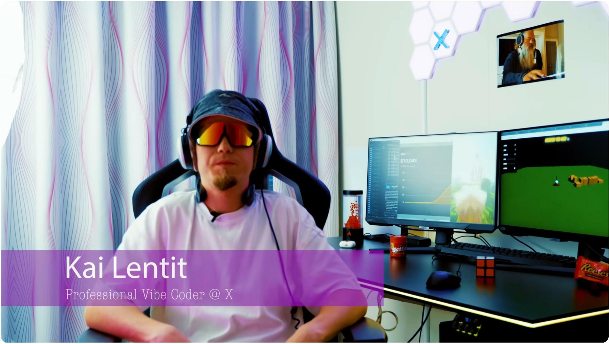
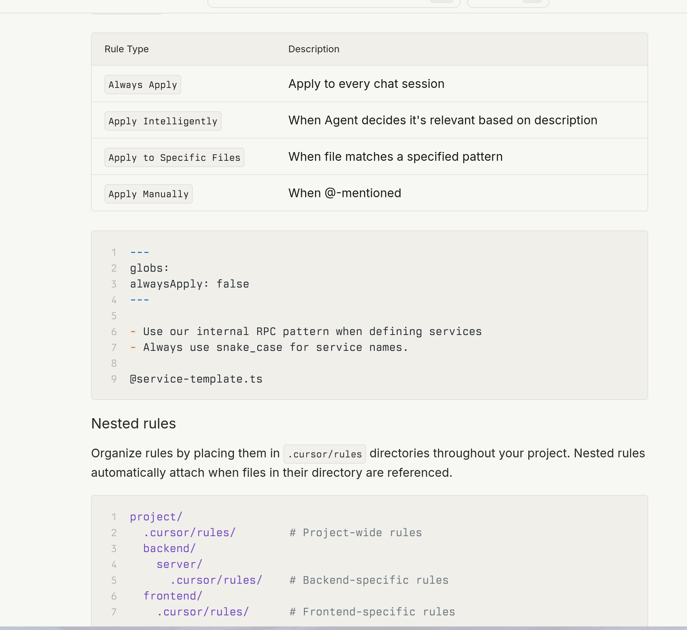
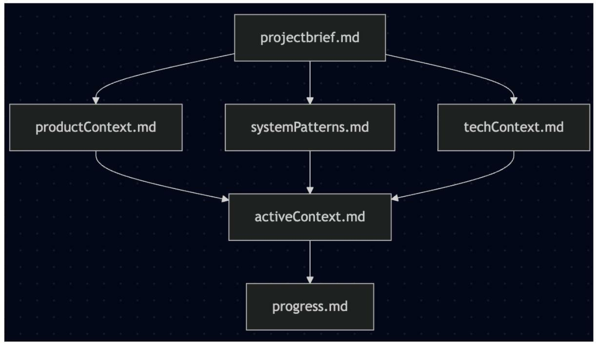
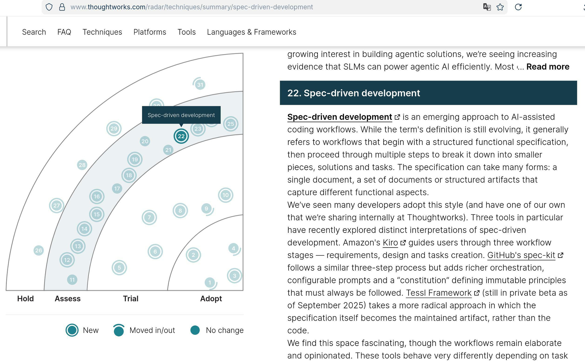
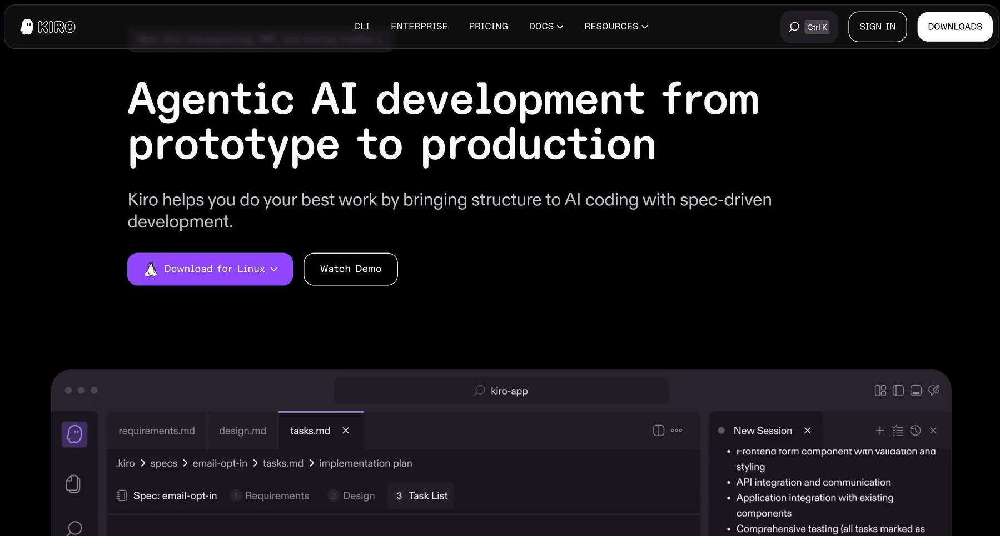
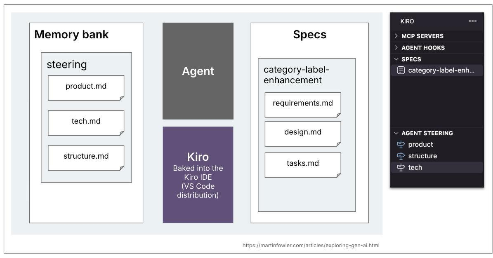
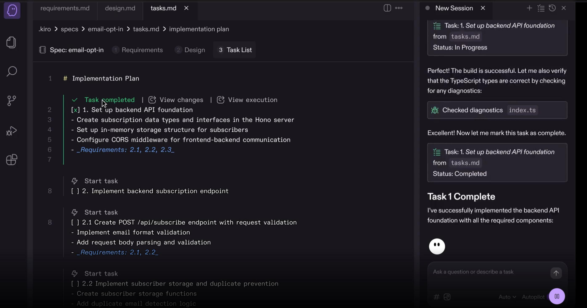

Вайб кодинг сейчас у всех на слуху. Вплоть до того что этот термин уже обрел мемность. Суть - разрабатываем софт в AI-enabled IDE (Cursor, Windsurf, Claude Code итд). Без планирования, one-shot only, accept everything :))
И конечно же те самые “Make no mistakes!” (для новичков) или “Fix it or you go to jail!” (для про).

Несмотря на мемы и шутейки, у вайбкодинга есть и плюсы:
- Zero friction. Тебе не надо нервничать над подготовкой и думать с чего начать. Есть идея - сразу начинаем ее воплощать в код.
- Как следствие быстрый idea-to-code loop. Быстро написали, быстро поправили (то что очевидно), перешли к следующей итерации.
А теперь минусы для серьезной разработки:
- Контекст живет только в этом одном чате.
- Нужно переобьяснять или суммаризировать для новых сессий.
- Не team-friendly процесс. И нет возможности его повторить достаточно идентично.
Две основные боли: context state и change management. А что если мы перенес нас стейт из чата в репозиторий?
Так мы переходим от Вайбов к Context rules. Контекст рулы - это текстовые файлы для вашей AI IDE, которые живут в вашем репозитории. Например .cursor/rules/agents.mdc или AGENTS.md. Они подхватываются в контекст всегда или по заданым условиям. И несут в себе описание работы с вашим конкретным проектом, бест практики для конкретного языка программирования или фреймворка ит.д.

Плюсы:
- Контекст сохранен в репе. Можно переиспользовать между сессиями и делиться с коллегами.
- Делаем работу более предсказуемой.
- Не надо каждый раз обьяснять нюансы и бест практики именно вашего проекта.
Но и у такого подхода есть минусы:
- Обновлять и поддерживать приходится вручную.
- Какие то рулы могут становиться неактуальными, легко об этом забыть.
- Для этих рулов нет стандартной структуры и синтаксиса.
Чтобы исправить эти минусы: лучше структурировать правила, упростить поддержку, отображать эволюцию вашего проекта по мере его разработки возник концепт
Memory Bank.
По сути это все еще текстовые рул файлы, но в которые мы (а чаще агент) пишет все что происходит. Требования, задачи, имплементация. Активный контекст агента. Сейчас этот концепт появляется во многих AI IDE (Kilo, Cline, Antigravity+Vertex AI, скоро хотят добавить и в Курсор)

Итого:
- И контекст и задачи у нас наконец не в чате, а в репозитории.
- Работет с разными IDE и агентами. Стабильно, даже если чат крашнулся.
- Упрощает онбординг и коллаборацию на проекте, все легко шарят общий прогресс проекта.
Но все еще есть минусы и проблемы:
- Этот процесс не так хорошо скейлится.
- Легко забыть обновить мемори банк своим прогрессом, получаем дрифт.
- Все еще нет унифицированной структуры между разными проектами.
А что если и context и change management будет частью общего унифицированного workflow? Так и появился концепт Spec-Driven Development.
Как видно на скрине - эта техника сейчас стоит в группе Assess на известном Tech Radar от компании Thoughtworks. То есть эту практику можно смело пробовать. Хотя основные постулаты да и сам термин сейчас быстро развивается и меняется.

Основные принципы:
- Мы создаем полный “spec” до того как начинаем писать какой либо код.
- Этот спек - source of truth и для разработчиков и для агентов.
- Change Management становится first class project artifacts.
Процесс разработки проекта или фичи становится повторяемым. Работа со спецификацией хорошо интегрируется в PR-ы, аудиты и архитектурные решения. Конечно же это не серебряная пуля, и все еще есть сложности:
- Все еще нужна дисциплина чтобы поддерживать спеки.
- Плохая спецификация -> Плохое решение (известный shit in - shit out принцип :)
- Команда должна согласиться на общий для всех формат спеков.
И решить эти проблемы призваны специальные тулы (или полноценные IDE), работающие в парадигме SDD. Здесь и появляется Kiro. 14 июля 25г. Всеми любимый (или не очень:)) Amazon/AWS выпускается свою AI-powered IDE, в принципе клон VSCode, но с интегрированным Spec Mode.

В которой ты с помощью агента создаешь полную спецификацию и implementation plan своего проекта. Получаем:
- Memory bank и спецификация по разработке фич в репозитории, но с нативной интеграцией в IDE и ее процессы.
- Системные промпты агентов заточены на этот процесс, общий универсальный формат спецификации.
- Хорошая работа с требованиями, мы можем подключать продукт овнеров для их разработки в понятном им формате. Дальше передавать процесс архитектам для создания и правок дизайна системы/фичи. Дальше разработчики могут давать фидбек по созданым задачам и начинать их имплементировать сразу в Kiro.

Вроде идеальное решение, но конечно же Vendor lock-in, и этот весь процесс будет работать только с Kiro. Хотя как мне кажется после написания требований, дизайна системы и списка задач - саму имплементацию каждой задачи можно делать и в любой сторонней IDE, задав ей правила как помечать то что реализовано и как давать фидбек.

В следующей статье я расскажу про свой опыт с Kiro. С реальной задачей - миграцией довольно крупного AI сервиса (docker compose на 1000+ строк, 40+ сервисов) на kubernetes helm. Как проходит весь процесс изнутри? Насколько прожорлив агент по токенам? Хватит ли бесплатного триала? Выводы и впечатления. А дальше еще будет 1-2 статьи про опенсорсные замены для Kiro.
_С вас лайк-шер-репост-давите колокольчик :) Подписывайтесь вобщем) t.me/ai_vs_dev… _